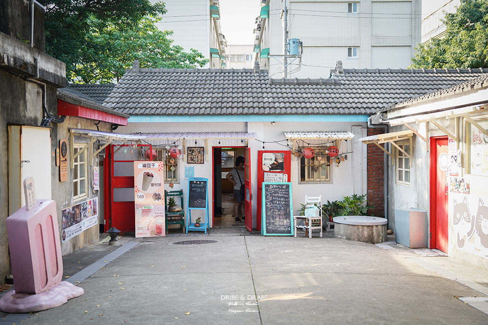

媒體識讀教學用
愛旅遊的甜甜 Claire
1 小時前 · 桃園市 ·
桃園人都不說的私藏祕境！在中壢近郊竟然有『台版小京都』？👘✨
門票只要 50 元，復古日式建築隨手拍都是大片📸，重點是：完全沒人，隨便你拍！
真的不敢相信中壢竟然有這麼美的地方，紅色的拉門配上懷舊的木造平房，瞬間有種穿越時空到日本的錯覺～🇯🇵❤️
趁現在還沒爆紅快衝！週末約閨蜜來這裡野餐看書也超 Chill 的啦～☕️📖
#桃園景點 #中壢美食 #台版小京都 #IG打卡聖地 #週末好去處 #私藏名單
門票只要 50 元，復古日式建築隨手拍都是大片📸，重點是：完全沒人，隨便你拍！
真的不敢相信中壢竟然有這麼美的地方，紅色的拉門配上懷舊的木造平房，瞬間有種穿越時空到日本的錯覺～🇯🇵❤️
趁現在還沒爆紅快衝！週末約閨蜜來這裡野餐看書也超 Chill 的啦～☕️📖
#桃園景點 #中壢美食 #台版小京都 #IG打卡聖地 #週末好去處 #私藏名單

56 則留言
125 次分享
王小明
真的假的！中壢有這種地方？我身為中壢人竟然不知道😂
讚
回覆
45 分鐘
Emily Chen
求地址！下週想帶小孩去拍美照～～
讚
回覆
32 分鐘
留言……